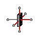

Table of Contents
- User's Guide
- Blocks
- Conditions
- Assemblies
- Regions
- Subregions
- Phases
- Species
- Chemistry
- Connectors
- Characteristics
- Units
- Quantities
- Utilities
- Icons
Download
- Latest: v0.2.4 (2014-01-22)
FCSys.Regions.AnFPs
Anode flow platesInformation
Extends from Modelica.Icons.Package (Icon for standard packages).Package Content
| Name | Description |
|---|---|
| AnFP | Anode flow plate |
 FCSys.Regions.AnFPs.AnFP
Anode flow plate
Information
This model represents the anode flow plate of a PEMFC.
The x axis extends from the anode to the cathode. Fluid is considered to travel
in the y direction, with the associated length factor (ky) greater than one (by default)
to represent a serpentine channel.
The model is
bidirectional, meaning that either yNegative or yPositive can be
used as the inlet. By default, the cross-sectional area in the yz plane is 50 cm2.
The solid and the fluid phases are assumed to exist in the same subregions, even though a typical flow plate is impermeable to the fluid (except for the channel). In theory, it is possible to discretize the flow plate into smaller subregions for the bulk solid, lands, and valleys. However, this would significantly increase the mathematical size of the model. Currently, that level of detail is best left to computational fluid dynamics.
The x component of the transport factor (kx) for the gas and the liquid should generally be less than one because the transport distance into/out of the GDL is less that half the thickness of the flow plate. It is equal to the product of two ratios:
- the depth of the channels to the thickness of the flow plate
- the product of the total area of the flow plate in the yz plane (land + valleys) and the fraction of the total volume available for the fluid (ε) to the area of the valleys in the yz plane
See Species.'C+'.Graphite.Fixed
regarding the default specific heat capacity. The default thermal resistivity
of the carbon (θ = U.m*U.K/(95*U.W)) and the
electrical conductivity (σ = U.S/(1.470e-3*U.cm))
are that of Entegris/Poco Graphite AXF-5Q
[Entegris2012].
There is additional data in the
text layer of this model.
For more information, please see the Region model.
Extends from Region (Base model for a 3D array of subregions).
Parameters
| Type | Name | Default | Description |
|---|---|---|---|
| replaceable model Subregion | FCSys.Subregions.SubregionNo… | Base subregion model | |
| Length | D | 0.937*U.mm | Hydraulic diameter of the channel [L] |
| Length | L_channel | 162.4*U.cm | Length of the channel [L] |
| Geometry | |||
| Length | L_x[:] | {10}*U.mm | Lengths along the x axis [L] |
| Length | L_y[:] | {8}*U.cm | Lengths along the y axis [L] |
| Length | L_z[:] | {6.25}*U.cm | Lengths across the z axis [L] |
| NumberAbsolute | epsilon | 0.0588 | Fraction of volume for the fluid [1] |
| Assumptions | |||
| Included transport axes | |||
| Boolean | inclTransX | true | X |
| Boolean | inclTransY | true | Y |
| Boolean | inclTransZ | false | Z |
Connectors
| Type | Name | Description |
|---|---|---|
| replaceable model Subregion | Base subregion model | |
| BoundaryBus | xNegative[n_y, n_z] | Negative boundary along the x axis |
| BoundaryBus | xPositive[n_y, n_z] | Positive boundary along the x axis |
| BoundaryBus | yNegative[n_x, n_z] | Negative boundary along the y axis |
| BoundaryBus | yPositive[n_x, n_z] | Positive boundary along the y axis |
| BoundaryBus | zNegative[n_x, n_y] | Negative boundary along the z axis |
| BoundaryBus | zPositive[n_x, n_y] | Positive boundary along the z axis |
Modelica definition
model AnFP "Anode flow plate" import Modelica.Constants.inf; // extends FCSys.Icons.Names.Top4; extends Region( L_x={10}*U.mm, L_y={8}*U.cm, L_z={6.25}*U.cm, final inclTransX=true, final inclTransY=true, inclTransZ=false, redeclare replaceable model Subregion = FCSys.Subregions.SubregionNoIonomer ( common(k_Phi={1e7,inf,1e7},k_Q=1e5), gas( common(k_Phi={inf,inf,inf}), H2_H2O(k_Phi={inf,inf,inf}), k={0.22*epsilon,Lstar/n_y,n_y/Lstar}, inclH2=true, inclH2O=true, H2( upstreamX=false, Nu_Phi={4,16*A[Axis.z]*epsilon/D^2,4}, final zeta=0, T(stateSelect=StateSelect.always)), H2O( upstreamX=false, Nu_Phi={4,16*A[Axis.z]*epsilon/D^2,4}, final zeta=0, I(each stateSelect=StateSelect.always, each fixed=true), initEnergy=Init.none)), graphite( 'inclC+'=true, 'incle-'=true, 'C+'(theta=U.m*U.K/(95*U.W),epsilon=1 - epsilon), 'e-'(sigma=U.S/(1.470e-3*U.cm))), liquid( k={0.22*epsilon,Lstar/n_y,n_y/Lstar}, inclH2O=true, H2O( upstreamX=false, Nu_Phi={4,16*A[Axis.z]*epsilon/D^2,4}, epsilon_IC=1e-5, N0=0.1*U.C)))); parameter Q.NumberAbsolute epsilon(nominal=1) = 0.0588 "Fraction of volume for the fluid"; parameter Q.Length D=0.937*U.mm "Hydraulic diameter of the channel"; parameter Q.Length L_channel=162.4*U.cm "Length of the channel"; protected final parameter Q.NumberAbsolute Lstar=L_channel/L[Axis.y] "Ratio of the length of the channel to the length of the layer in the y direction"; Q.Velocity phi_states_H2[:, :, :]( each stateSelect=StateSelect.always, each start=0, each fixed=true) = subregions[:, 2:n_y, :].gas.H2.phi[2] if n_y > 1 "Forced states for H2"; // Note: This avoids dynamic state selection in Dymola 2014. outer Conditions.Environment environment "Environmental conditions"; // Thermal resistivity of some other flow plate materials [Incropera2002, pp. 905 & 907]: // Stainless steel // --------------------------------------------------------------------------------- // Aluminium (pure) AISI 302 AISI 304 AISI 316 AISI 347 // ---------------- ------------------ ------------------ ----------------- ----------------- // theta theta theta theta theta // c_p*U.kg *U.W c_p*U.kg *U.W c_p*U.kg *U.W c_p*U.kg *U.W c_p*U.kg *U.W // *U.K /(U.m *U.K /(U.m *U.K /(U.m *U.K /(U.m *U.K /(U.m // T/K /(U.J*m) *U.K) /(U.J*m) *U.K) /(U.J*m) *U.K) /(U.J*m) *U.K) /(U.J*m) *U.K) // ---- -------- ----- -------- ------ -------- ------- -------- ------ -------- ------ // 100 482 1/302 272 1/9.2 // 200 798 1/237 402 1/12.6 // 300 903 1/237 480 1/15.1 477 1/14.9 468 1/13.4 480 1/14.2 // 400 949 1/240 512 1/17.3 515 1/16.6 504 1/15.2 513 1/15.8 // 600 1033 1/231 559 1/20.0 557 1/19.8 550 1/18.3 559 1/18.9 // 800 1146 1/218 585 1/22.8 582 1/22.6 576 1/21.3 585 1/21.9 // 1000 606 1/25.4 611 1/25.4 602 1/24.2 606 1/24.7 // Electrical resistivities: // Aluminium // (http://en.wikipedia.org/wiki/Electrical_resistivity, 2008): // 2.82e-8 ohm.m // Graphite (http://hypertextbook.com/facts/2004/AfricaBelgrave.shtml): // 7.837e-6 to 41e-6 ohm.m // Copper (http://en.wikipedia.org/wiki/Electrical_resistivity, 2008): // 1.72e-8 ohm.m // Stainless steel AISI 304 // (http://hypertextbook.com/facts/2006/UmranUgur.shtml, 2008): // 6.897e-7 ohm.m end AnFP;